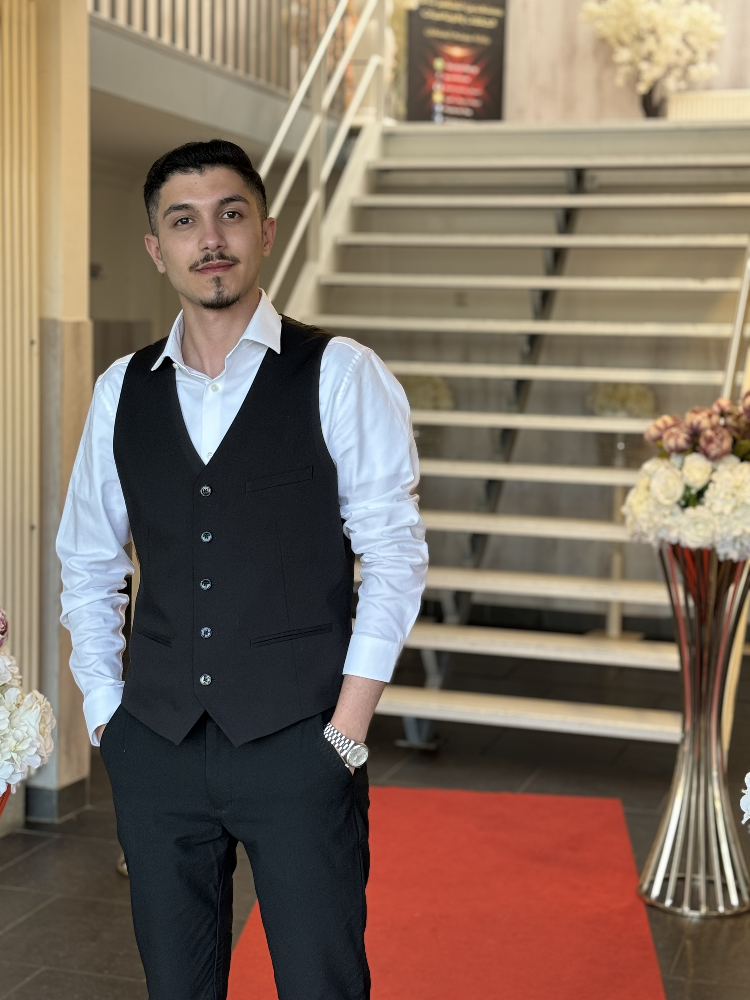

Mijn naam is Adnan Haboub en ik ben 25 jaar oud. Drie jaar geleden ben ik naar Nederland gevlucht. Ik ben geboren in Syrië, maar mijn roots liggen in Palestina. Momenteel volg ik de opleiding Software Developer niveau 4. Ik ben enthousiast om een stageplek te vinden waar ik mijn kennis kan toepassen en mijn ervaring verder kan uitbreiden. Ik geniet ervan om ideeën om te zetten in waardevolle oplossingen. Met ervaring in CSS, HTML, JavaScript, en het testen en verbeteren van websites, wil ik graag een positieve bijdrage leveren aan uw bedrijf. Ik geloof in samenwerking, open communicatie en continue groei, zowel professioneel als persoonlijk. Door voortdurend nieuwe vaardigheden te leren, blijf ik mezelf uitdagen om beter te worden in wat ik doe. Mijn doel is om deel uit te maken van projecten die een positieve impact hebben, zowel op de gebruikers als op de organisatie zelf. Ik kijk ernaar uit om samen te werken en iets bijzonders te creëren!
| Module | Cijfer |
|---|---|
| Algemene Vakken | |
| Nederlands | 5.8 |
| Engels | Voldoende |
| Rekenen | Goed |
| Burgerschap | Voldoende |
| Vakinhoudelijke Onderdelen | |
| Plannen en Ontwerpen | 7.4 |
| Realiseren | Voldoende |
| Computervaardigheden | Goed |
| Praktijk | Voldoende |
| Testen en Verbeteren | 8.9 |
"Ik heb bij ShiyarAcademy een Master Certificate in CSS en HTML behaald. In 2021 werkte ik als tolk bij COA in Groningen, waarvoor ik certificaten heb ontvangen. Daarnaast heb ik in Grave bij Esterade met kinderen gewerkt, waar ik twee keer als begeleider heb geholpen: de eerste keer bij het bouwen van huizen met kinderen en de tweede keer tijdens het Halloweenfeest. Ook heb ik verschillende activiteiten georganiseerd. U kunt alle certificaten onderaan deze pagina vinden"